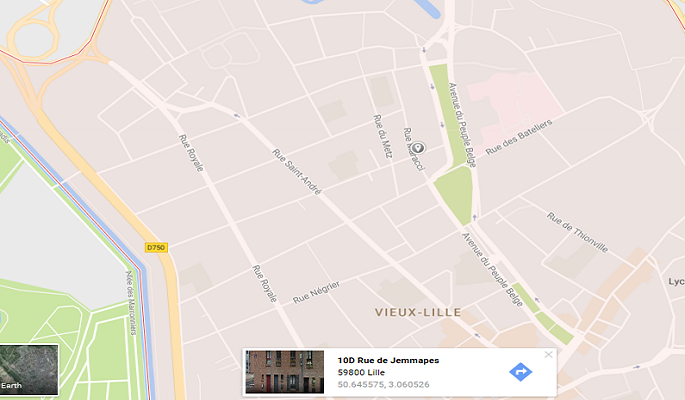

L'architecture correspond à l’art de bâtir. C’est un art savant et complexe dont une des fonctions majeures est de donner des repères spatiaux et symboliques, qui varient d'une civilisation à l'autre. Reflet d'une époque, d'une culture, d'une société, l’architecture modèle les hommes et agit sur leur mode de vie : chacun, en effet, y est perpétuellement confronté. On considère parfois que l'architecture intègre tous les autres arts, par le fait qu’elle concerne à la fois le champ pictural – les façades sont des plans à organiser selon les ouvertures, les ornementations, les proportions –, le champ sculptural – les bâtiments sont des volumes et des masses à équilibrer, à contraster, à rythmer – et le champ de l'espace interne construit, c'est-à-dire espace délimité par des murs et un toit. De fait, l'architecte est le maître d'œuvre, sinon d'un art total, du moins d'un art synthétique par excellence.
L'agence Archinord est une agence ouverte sur le monde puisque 78% de ses projets sont orientés à l'international. Ces projets sont innovants mais respectueux à la fois du contexte culturel et historique de la zone de travaux mais également de l'environnement puisque les batiments sont éco-conçus afin d'être majoritairement autonome en énergie.

L'agence Archinord est située au coeur du Vieux-Lille, rue Jemmapes.